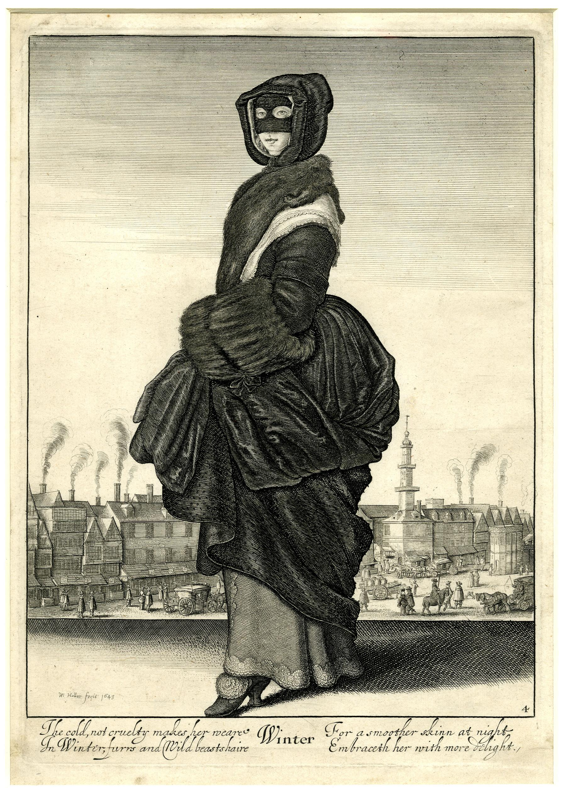
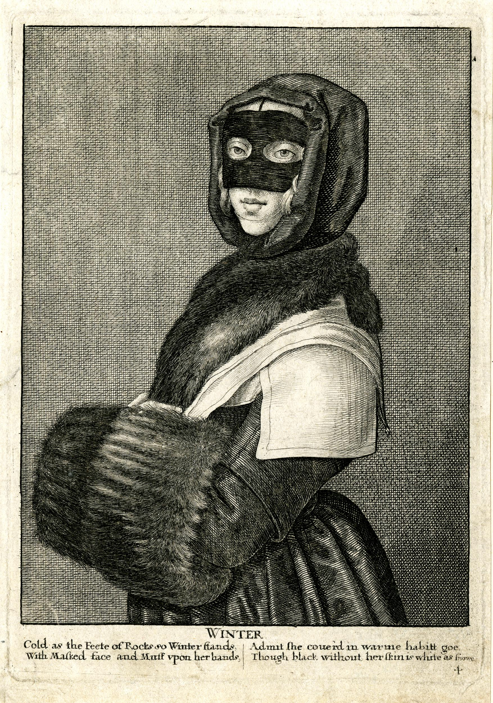

<div>
	<p><a href="https://www.britishmuseum.org/collection/object/P_1850-0223-434" target="_blank"></a><a href="https://www.britishmuseum.org/collection/object/P_Q-5-614" target="_blank"></a>At the very beginning of the book, Benlowes repurposes Wenceslaus Hollar’s “Winter Woman” toward similar ends. Taken from a series of plates depicting English women’s seasonal costumes, the image shows a woman almost entirely wrapped in furs. The version that Benlowes has access to is half-length, lacking the background scenery and the somewhat bawdy epigraph of the full-length version, and he appears to again have scratched off the caption.Benlowes inserts this found engraving opposite a preliminary address to female readers, instructing them to “Survey  THEOPHILA” — that is, track the landscape of both the character, the poem, and the book — for it grows such “fragrant Flow’rs, … Blown by such Breath, drench’t by such Dew,” that when women read it, such plants might also “Spring, & display their Buds,” in them. In at least one copy — a presentation copy to his bookseller Humphrey Moseley — Benlowes has annotated the print with the caption — “This shewes a Lady should affect a Dresse, / That Modesty & Vertue may expresse” — as well as a series of anagrams in English, Latin and Greek on the name of “Sophia Lancaster,” expressing her chaste virtue — for example, “Sophia Lancaster. / A plain chast Rose.” By hinging female modesty to a fashionable woman — and the fragrant buds of spring to winter furs — Benlowes draws tension from the poem, turning a conventional address into a metaphysical puzzle. That he chooses to use a widely-copied engraving from a series that must have been known to many of his readers suggests his desire not only to add depth to his text but to rework the connotations of Hollar’s image as it circulated outside the book. As with all of his found images, here the gatherings of his codex serve as a prism through which the reader’s understanding passes, diffracting her prior associations and relations to popular visual and print cultures.</p>
</div>
